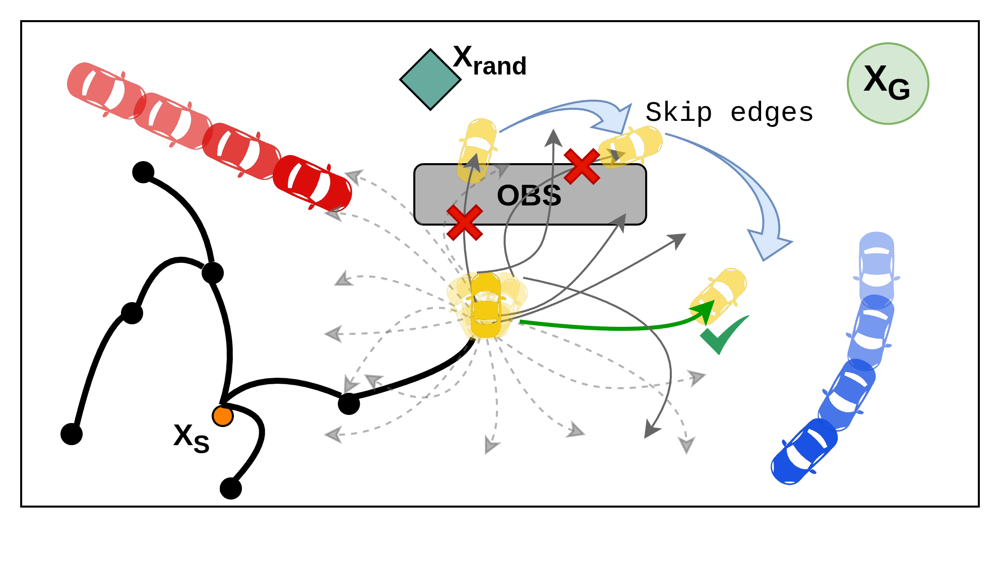
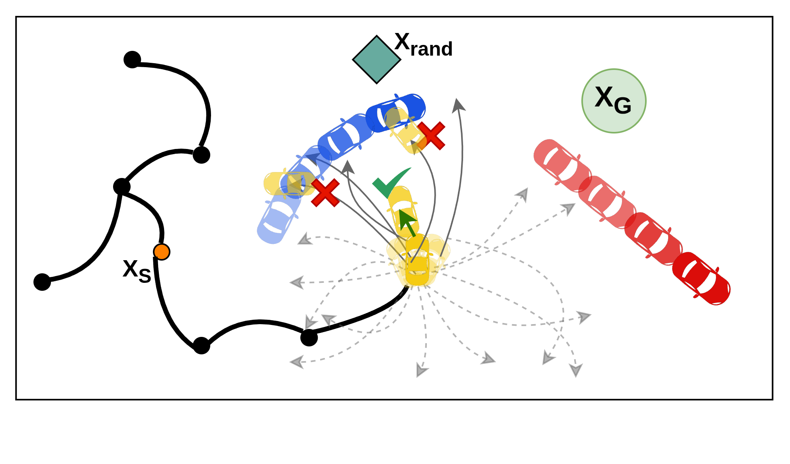

Abstract
Solving multi-robot motion planning (MRMP) requires generating collision-free kinodynamically feasible trajectories for multiple interacting robots. We introduce Kinodynamic Translation-Invariant Edge Bundles or KiTE-Extend, a planner-agnostic action selection mechanism for sampling-based kinodynamic motion planning. KiTE-Extend uses a library of trajectory segments computed offline to guide action selection during online planning, improving the ability of existing planners to identify feasible motion segments without altering state propagation, collision checking, or cost evaluation, and without changing their theoretical guarantees. While KiTE-Extend can modestly improve single-agent planners, its benefits are most clear in the multi-agent setting, where it is able to explore more effectively and significantly improve planning through the dense spatiotemporal constraints introduced by robot-robot interaction. Through experiments on multiple kinodynamic systems and environments, we show that KiTE-Extend reduces planning time and improves scalability across the three most common MRMP paradigms: centralized, prioritized, and conflict-based.


Fig. 2 from the paper. KiTE-Extend ranks precomputed dynamically feasible trajectory segments by endpoint distance to the sampled state and tries them in order. Left: invalid edges are skipped when they collide with static obstacles. Right: under agent collision constraints, the same mechanism selects a safe alternative, including low-velocity or wait-like motions when needed.
Key idea
Turn local expansion into retrieval and ranking.
Sampling-based kinodynamic planners spend much of their time trying local control rollouts that collide, violate constraints, or make little progress. KiTE-Extend keeps the planner unchanged, but replaces naive random action selection with reusable candidate motions computed offline.
At a glance
What KiTE-Extend contributes
- Planner-agnostic action selection. KiTE-Extend plugs into sampling-based kinodynamic planners at the local expansion step.
- Offline reuse without discretizing the search space. Edge bundles guide expansion, but planning remains continuous and sampling-based.
- Guarantee-preserving fallback. Candidate edges are validated online, and random expansion remains available to preserve exploration.
- Multi-robot impact. The same primitive improves centralized RRT, prioritized RRT, and conflict-based search across several robot models.
Results summary
Faster planning, better scalability, shorter trajectories.
Experiments use 100 trials per setting with a 300 second runtime budget, comparing baseline planners against their KiTE-Extend variants for unicycle, second-order car, and double-integrator systems.
Where it helps
One expansion primitive, three MRMP paradigms.
Video comparisons
Baseline planners vs. KiTE-Extend variants.
Each row compares the baseline planner with the corresponding KiTE-Extend variant for the same environment. All videos autoplay muted at 2x speed.
pRRT comparison: 30 robots, Swap environment
KCBS comparison: 18 robots, Small Cluttered environment
KCBS comparison: 30 robots, Large Cluttered environment
KCBS comparison: 30 robots, Large Cluttered 3D environment
BibTeX
@article{gupta2026kiteextend,
title={Efficient Multi-Robot Motion Planning with Precomputed Translation-Invariant Edge Bundles},
author={Gupta, Himanshu and Motter, Paul and Chakrabarty, Aritra and Sodani, Rishabh and Raghu, Srikrishna Bangalore and Roncone, Alessandro and Hayes, Bradley and Sunberg, Zachary},
year={2026}
}Paper